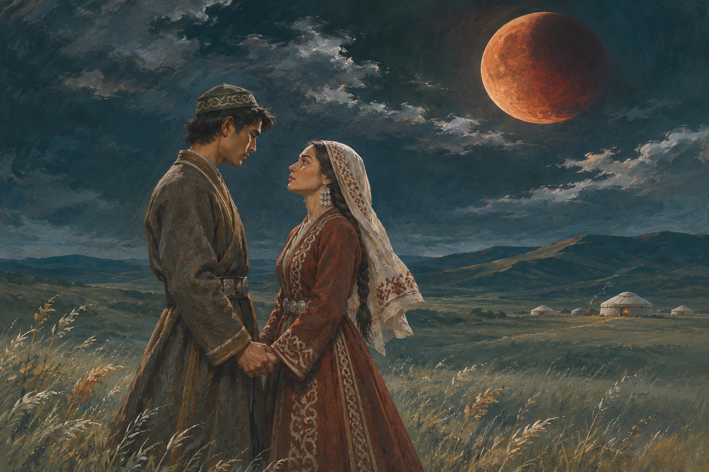

---
{
  "title": "В ночь лунного затмения — Мустай Карим — Уфа литературная"
}
---
<article class="reading" data-reader>
  <h1 class="page-title">В ночь лунного затмения</h1>
  <p>«В ночь лунного затмения» — известная пьеса Мустая Карима, переведённая на многие языки и получившая широкую сценическую жизнь. Это трагедия в трёх действиях с эпилогом о любви, человеческом достоинстве и праве выбирать свою судьбу.</p>
  <nav class="related-links" aria-label="Чтение пьесы"><a href="https://ebook.bashnl.ru/reader/bookView.html?params=UmVzb3VyY2UtODMyNw/0JIg0L3QvtGH0Ywg0LvRg9C90L3QvtCz0L4g0LfQsNGC0LzQtdC90LjRjyDQnC7QmtCw0YDQuNC8">Читать пьесу в электронной библиотеке</a></nav>
  <figure class="material-figure">
    
    <figcaption>Акъегет и Зубаржат. Иллюстрация по мотивам пьесы, созданная для «Уфы литературной».</figcaption>
  </figure>
  <h2>О чём пьеса</h2>
  <p>В башкирской степи Акъегет и Зубаржат мечтают о счастье. Но в мире, где древний обычай сильнее личного желания, их любовь оказывается перед непростым испытанием.</p>
  <p>Можно ли сохранить верность родным и при этом не предать себя? Что важнее — покой привычного мира или право выбрать собственную судьбу? Эти вопросы Мустай Карим доверяет своим героям — и читателю.</p>
  <p class="archive-small">О произведении: <a href="https://mustai.ru/heritages">Фонд имени Мустая Карима</a>, <a href="https://bashdram.ru/v-noch-lunnogo-zatmeniya/">Башкирский академический театр драмы имени Мажита Гафури</a>. О переводах и сценической судьбе: <a href="https://ebook.bashnl.ru/dsweb/View/ResourceCollection-3264">издания на языках народов России и мира</a>, <a href="https://mustai.ru/news_items/971">постановка на кыргызской сцене</a>.</p>
</article>
